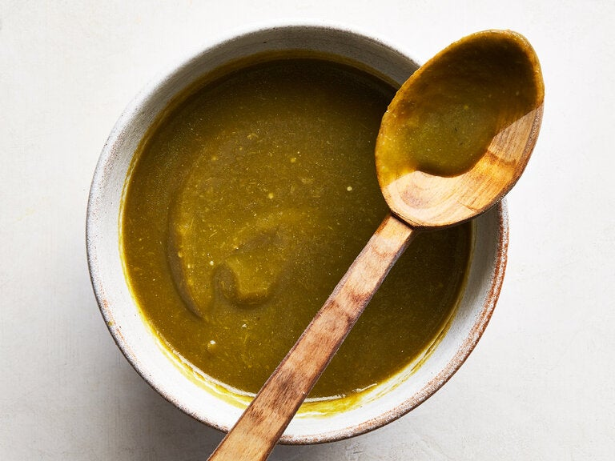

Popcorn

Ingredients
- 3 Tb Oil + More for Drizzling
- 2 Poblano Peppers
- 5-6 Tomatillos
- Spice Mix
- 3 Tb Flour or 1.5 Tb Cornstarch
- 1 Tb Ground Chili*
- 1 Ts Ground Cumin
- 1/2 Ts Garlic Powder
- 1/4 Ts Oregano
- 1/4 Ts Salt, to Taste
- Pinch of Cinnamon, to Taste (optional)
- 2 Tb Tomato Paste
- 2 cups Veggie or Chicken Broth
- Splash of Apple Cider Vinegar
- Cracked Pepper, to Taste
*This is the Non Spicy Kind! Substitute some of this out with Cayenne Powder or HOT Chili Powder for heat in the sauce. A little goes a long way!
Steps
- Roast Peppers (cut to lat flat skin side up) and Tomatillos (cut in half) in a 375* Oven until lightly colored and soft.
The Tomatillos will be oozing juice
- Mix Spices before starting and assemble all other ingredients, this recipe is fast!
- Add oil to a sauce pot on medium heat. Add spice mix when oil is hot. Mix for 30+ seconds until browned and fragrant
- add Tomato Paste and Mix until combined
- Add Broth and Simmer ~7 minutes until slightly thickened
- Chop Roasted Veggies coarsely
- Add Roasted Veggies, Vinegar, and Cracked Pepper to the sauce, and use an immersion blender to mix in the veggies until the desired texture is reached
Voila! This makes enought to cover ~16 Enchiladas. Enjoy
Recipe Index